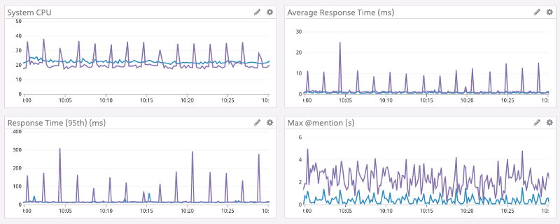
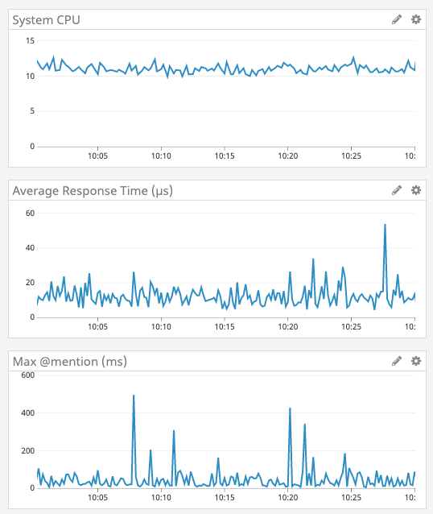
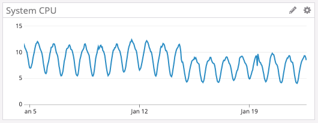

داستان ترمز قطار
شروع با یک تمثیل تاریخی: داستان اختراع ترمز هوایی قطار و مقایسه آن با انقلاب ایمنی در برنامهنویسی سیستمها.


i8, i16, i32, i64, i128, isizeu8, u16, u32, u64, u128, usizef32, f64bool — true یا falsechar — ۴ بایت، Unicode&str — برش رشتهString — رشته روی heap(i32, bool, f64)[T; N]Vec<T>struct Point { x: f64, y: f64 }enum Direction { North, South }() — unit typelet x: i32 = 42;
let pi: f64 = 3.14;
let name: &str = "Rust";
let arr: [i32; 3] = [1, 2, 3];
let tup: (i32, bool) = (10, true);let s1 = String::from("hello");
let s2 = s1; // s1 منتقل شد (move)
// println!("{}", s1); // ❌ خطا — s1 دیگر معتبر نیست
let s3 = String::from("world");
let s4 = s3.clone(); // کپی عمیق — هر دو معتبرند
println!("{} {}", s3, s4); // ✅Copy مانند i32 و bool بهجای انتقال، کپی میشوند.
fn length(s: &String) -> usize {
s.len() // s قرض میگیریم، مالکیت نمیگیریم
}
fn main() {
let s = String::from("سلام");
let len = length(&s); // &s یعنی ارجاع به s
println!("طول: {} — s هنوز معتبر است: {}", len, s);
}&T — ارجاع غیر قابل تغییر (immutable reference)&mut T — ارجاع قابل تغییر (mutable reference)در هر لحظه یا:
&T (خواندنی)&mut T (نوشتنی)let mut v = vec![1, 2, 3];
// ✅ چند ارجاع خواندنی
let r1 = &v;
let r2 = &v;
println!("{:?} {:?}", r1, r2);
// ✅ یک ارجاع نوشتنی
let r3 = &mut v;
r3.push(4);
// ❌ اشتباه: همزمان mutable و immutable
// let r4 = &v;
// r3.push(5);// 'a: هر دو ارجاع ورودی باید حداقل تا 'a زنده باشند
fn longest<'a>(x: &'a str, y: &'a str) -> &'a str {
if x.len() > y.len() { x } else { y }
}
fn main() {
let s1 = String::from("برنامهنویسی طولانی");
let result;
{
let s2 = String::from("Rust");
result = longest(s1.as_str(), s2.as_str());
println!("طولانیتر: {}", result); // ✅
}
// println!("{}", result); // ❌ s2 از scope خارج شده
}اکثر اوقات کامپایلر lifetime را خودش استنتاج میکند (lifetime elision).
// if بهعنوان expression
let x = 5;
let msg = if x > 0 { "مثبت" } else { "منفی یا صفر" };
// بلوک بهعنوان expression (آخرین خط بدون ;)
let y = {
let a = 3;
let b = 4;
a * a + b * b // مقدار بازگشتی: 25
};
// match بهعنوان expression
let grade = match y {
25 => "عالی",
10..=24 => "خوب",
_ => "نیاز به تلاش بیشتر",
};
println!("{}", grade);Result<T, E> — برای خطاهای قابل بازیابیOption<T> — برای مقادیر اختیاری? — انتشار خطا به callerpanic! — برای خطاهای غیرقابل بازیابیfn divide(a: f64, b: f64)
-> Result<f64, String>
{
if b == 0.0 {
Err(String::from("تقسیم بر صفر"))
} else {
Ok(a / b)
}
}
fn main() -> Result<(),
Box<dyn std::error::Error>>
{
let res = divide(10.0, 2.0)?;
println!("نتیجه: {}", res);
Ok(())
}mod// Cargo.toml
// [dependencies]
// serde = { version = "1", features = ["derive"] }
// tokio = { version = "1", features = ["full"] }
mod math {
pub fn add(a: i32, b: i32) -> i32 {
a + b
}
fn secret() -> i32 { 42 } // خصوصی
}
use math::add;
fn main() {
println!("{}", add(2, 3)); // 5
}trait Animal {
fn name(&self) -> &str;
fn speak(&self) -> String;
fn description(&self) -> String { // متد پیشفرض
format!("{} میگوید: {}", self.name(), self.speak())
}
}
struct Dog;
impl Animal for Dog {
fn name(&self) -> &str { "سگ" }
fn speak(&self) -> String { String::from("هاو هاو") }
}
fn make_sound(a: &dyn Animal) { // trait object
println!("{}", a.description());
}
fn main() {
let dog = Dog;
make_sound(&dog); // سگ میگوید: هاو هاو
}// تابع جنریک با قید Trait
fn largest<T: PartialOrd>(list: &[T]) -> &T {
let mut max = &list[0];
for item in list {
if item > max { max = item; }
}
max
}
// ساختار جنریک
struct Pair<T> {
first: T,
second: T,
}
impl<T: std::fmt::Display> Pair<T> {
fn show(&self) {
println!("({}, {})", self.first, self.second);
}
}
fn main() {
let nums = vec![34, 50, 25, 100, 65];
println!("بزرگترین: {}", largest(&nums));
}fn apply<F: Fn(i32) -> i32>(f: F, x: i32) -> i32 {
f(x)
}
fn main() {
let factor = 3;
let multiply = |n| n * factor; // capture by reference
println!("{}", apply(multiply, 5)); // 15
// تبدیل با iterator + closure
let nums = vec![1, 2, 3, 4, 5];
let evens: Vec<i32> = nums.iter()
.filter(|&&x| x % 2 == 0)
.map(|&x| x * x)
.collect();
println!("{:?}", evens); // [4, 16]
}
// سه نوع Closure Trait:
// Fn — capture by reference (چندین بار قابل فراخوانی)
// FnMut — capture by mutable reference
// FnOnce — capture by value (یک بار قابل فراخوانی)use std::sync::{Arc, Mutex};
use std::thread;
fn main() {
let counter = Arc::new(Mutex::new(0));
let mut handles = vec![];
for _ in 0..10 {
let c = Arc::clone(&counter);
handles.push(thread::spawn(move || {
*c.lock().unwrap() += 1;
}));
}
for h in handles { h.join().unwrap(); }
println!("نتیجه: {}", *counter.lock().unwrap()); // 10
}
// channel برای ارسال پیام بین threadها
use std::sync::mpsc;
let (tx, rx) = mpsc::channel();
thread::spawn(move || { tx.send("سلام").unwrap(); });
println!("{}", rx.recv().unwrap());async/await برنامهنویسی ناهمزمان را به سبک sync مینویسد. Tokio پرکاربردترین async runtime است.
use std::time::Duration;
use tokio::time::sleep;
#[tokio::main]
async fn main() {
let result = fetch_data().await;
println!("{}", result);
// اجرای موازی چند Future
let (a, b) = tokio::join!(
fetch_data(),
fetch_data()
);
println!("{} — {}", a, b);
}
async fn fetch_data() -> String {
sleep(Duration::from_millis(100)).await;
String::from("داده دریافت شد")
}Pin<P> تضمین میکند که مقداری که pointer به آن اشاره میکند در حافظه جابهجا نمیشود.
این برای self-referential structureها در async/await ضروری است.
Unpin — تایپهایی که جابهجایی آنها ایمن است (اکثر تایپها)!Unpin — تایپهایی که نباید جابهجا شوند (مثل Futureهای پیچیده)Pin::new() — برای تایپهای UnpinBox::pin() — برای pin کردن روی heapuse std::pin::Pin;
// async fn خودکار Future ای تولید میکند که !Unpin است
// executor باید آن را pin کند قبل از poll
async fn example() { /* ... */ }
let fut = Box::pin(example());ماکروهای اعلانی (macro_rules!)
macro_rules! say_hello {
() => {
println!("سلام Rust!");
};
($name:expr) => {
println!("سلام {}!", $name);
};
}
say_hello!(); // سلام Rust!
say_hello!("دنیا"); // سلام دنیا!ماکروهای رویهای (Procedural)
#[derive(...)] — تولید خودکار کدderive(Debug, Clone, Serialize)vec![]#[derive(Debug, Clone)]
struct Point {
x: f64,
y: f64,
}
let p = Point { x:1.0, y:2.0 };
println!("{:?}", p);unsafe مسئولیت ایمنی حافظه را به برنامهنویس میسپارد — با احتیاط استفاده کنید.
در unsafe میتوانید:
fn main() {
let mut num = 5;
// raw pointer ساختن
let r1 = &num as *const i32;
let r2 = &mut num as *mut i32;
unsafe {
println!("r1: {}", *r1);
*r2 = 10;
println!("r2: {}", *r2);
}
}
unsafe fn dangerous() {
println!("این تابع ناایمن است");
}// فراخوانی C از Rust
extern "C" {
fn abs(x: i32) -> i32;
fn strlen(s: *const i8) -> usize;
}
fn main() {
unsafe {
println!("abs(-5) = {}", abs(-5));
}
}
// صادر کردن به C
#[no_mangle]
pub extern "C" fn add(a: i32, b: i32) -> i32 {
a + b
}cargo build --release → کتابخانه .so / .dllpub/private و moduleimpl بلوکهاstruct Rectangle {
width: f64,
height: f64,
}
impl Rectangle {
// سازنده (constructor)
pub fn new(width: f64, height: f64) -> Self {
Rectangle { width, height }
}
// متد نمونه
pub fn area(&self) -> f64 {
self.width * self.height
}
pub fn perimeter(&self) -> f64 {
2.0 * (self.width + self.height)
}
pub fn is_square(&self) -> bool {
self.width == self.height
}
}
fn main() {
let rect = Rectangle::new(10.0, 5.0);
println!("مساحت: {}", rect.area());
println!("محیط: {}", rect.perimeter());
}pub — قابل دسترسی از همه جاpub — خصوصی به ماژولpub(crate) — فقط داخل کتابخانهpub(super) — فقط ماژول پدرmod bank {
pub struct Account {
owner: String, // خصوصی
balance: f64, // خصوصی
}
impl Account {
pub fn new(owner: &str) -> Self {
Account {
owner: owner.to_string(),
balance: 0.0,
}
}
pub fn deposit(&mut self, amount: f64) {
if amount > 0.0 {
self.balance += amount;
}
}
pub fn balance(&self) -> f64 {
self.balance
}
}
}
use bank::Account;
let mut acc = Account::new("علی");
acc.deposit(1000.0);
println!("{}", acc.balance()); // ✅
// acc.balance = 999.0; // ❌ خطاtrait Greet {
fn name(&self) -> &str;
// متد پیشفرض — نیاز به override ندارد
fn greeting(&self) -> String {
format!("سلام، {}!", self.name())
}
}
struct Person { name: String }
impl Greet for Person {
fn name(&self) -> &str { &self.name }
// greeting() از پیشفرض استفاده میکند
}
struct Robot { id: u32 }
impl Greet for Robot {
fn name(&self) -> &str { "ربات" }
fn greeting(&self) -> String { // override
format!("BEEP BOOP — Robot #{}", self.id)
}
}
fn main() {
let p = Person { name: "علی".to_string() };
let r = Robot { id: 42 };
println!("{}", p.greeting()); // سلام، علی!
println!("{}", r.greeting()); // BEEP BOOP — Robot #42
}جایگذینی آبجکتها بهجای یکدیگر در زمان اجرا چنانچه مشترکا ویژگی خاصی دارند.
Static dispatch (Generic): بدون هزینه زمان اجرا
fn print_area<T: Shape>(s: &T) {
println!("{}", s.area());
}Dynamic dispatch (dyn Trait): vtable در زمان اجرا
fn print_area(s: &dyn Shape) {
println!("{}", s.area());
}
let shapes: Vec<Box<dyn Shape>> = vec![
Box::new(Circle { r: 1.0 }),
Box::new(Rect { w: 2.0, h: 3.0 }),
];
for s in &shapes { print_area(s.as_ref()); }use actix_web::{web, App, HttpServer, HttpResponse, Responder};
use serde::{Deserialize, Serialize};
#[derive(Serialize)]
struct User { id: u32, name: String }
#[derive(Deserialize)]
struct Query { name: String }
async fn hello(query: web::Query<Query>) -> impl Responder {
HttpResponse::Ok().json(User {
id: 1,
name: query.name.clone(),
})
}
async fn health() -> impl Responder {
HttpResponse::Ok().body("سرور سالم است ✅")
}
#[actix_web::main]
async fn main() -> std::io::Result<()> {
HttpServer::new(|| {
App::new()
.route("/hello", web::get().to(hello))
.route("/health", web::get().to(health))
})
.bind("127.0.0.1:8080")?
.run()
.await
}use axum::{routing::get, Router, Json};
use serde::Serialize;
#[derive(Serialize)]
struct Message { text: String }
async fn root() -> Json<Message> {
Json(Message { text: "سلام از Axum!".to_string() })
}
async fn user(
axum::extract::Path(id): axum::extract::Path<u32>
) -> Json<Message> {
Json(Message { text: format!("کاربر شماره {}", id) })
}
#[tokio::main]
async fn main() {
let app = Router::new()
.route("/", get(root))
.route("/user/:id", get(user));
let listener =
tokio::net::TcpListener::bind("0.0.0.0:3000").await.unwrap();
axum::serve(listener, app).await.unwrap();
}| ویژگی | Java | Rust |
|---|---|---|
| مدیریت حافظه | Garbage Collector (GC) | Ownership — بدون GC |
| سرعت اجرا | سریع (JIT) | بسیار سریع (AOT، بدون pause) |
| مصرف حافظه | بالا (JVM overhead) | بسیار کم |
| Null safety | NullPointerException! | Option<T> — بدون null |
| خطاها | Exception | Result<T,E> — صریح |
| همزمانی | Thread + lock (runtime) | Fearless — تضمین compile-time |
| منحنی یادگیری | متوسط | چالشبرانگیز در ابتدا |
| اکوسیستم | بسیار بالغ | رو به رشد (crates.io) |





| ویژگی | C / C++ | Rust |
|---|---|---|
| ایمنی حافظه | ❌ دستی — use-after-free، buffer overflow | ✅ تضمین compile-time |
| سرعت | ✅ بسیار سریع | ✅ برابر یا سریعتر |
| Data race | ❌ ممکن است رخ دهد | ✅ غیرممکن در safe Rust |
| Null pointer | ❌ undefined behavior | ✅ Option<T> |
| Build system | Make/CMake — پیچیده | Cargo — ساده و یکپارچه |
| بلوغ اکوسیستم | چند دهه | ۱۰ ساله — رو به رشد |
چالشها:
&str و Stringمزایای بعد از یادگیری:

// ❌ بد
let val = some_option.unwrap(); // panic اگر None
// ✅ خوب
let val = some_option.unwrap_or_default();
let val = some_option.expect("توضیح منطقی");
if let Some(v) = some_option { /* ... */ }#[derive(Debug)]
struct Request {
url: String,
method: String,
timeout: u32,
headers: Vec<(String, String)>,
}
struct RequestBuilder {
url: String,
method: String,
timeout: u32,
headers: Vec<(String, String)>,
}
impl RequestBuilder {
fn new(url: &str) -> Self {
RequestBuilder {
url: url.to_string(),
method: "GET".to_string(),
timeout: 30,
headers: vec![],
}
}
fn method(mut self, m: &str) -> Self { self.method = m.to_string(); self }
fn timeout(mut self, t: u32) -> Self { self.timeout = t; self }
fn header(mut self, k: &str, v: &str) -> Self {
self.headers.push((k.to_string(), v.to_string())); self
}
fn build(self) -> Request {
Request { url: self.url, method: self.method,
timeout: self.timeout, headers: self.headers }
}
}
fn main() {
let req = RequestBuilder::new("https://api.example.com/data")
.method("POST")
.timeout(60)
.header("Content-Type", "application/json")
.build();
println!("{:?}", req);
}// Newtype — جلوگیری از اشتباه واحدها
struct Meters(f64);
struct Kilograms(f64);
fn calculate_bmi(weight: Kilograms, height: Meters) -> f64 {
weight.0 / (height.0 * height.0)
}
// ❌ این کامپایل نمیشود:
// calculate_bmi(Meters(1.75), Kilograms(70.0));
// ✅ ترتیب صحیح:
let bmi = calculate_bmi(Kilograms(70.0), Meters(1.75));
// Decorator Pattern با Trait
trait Logger { fn log(&self, msg: &str); }
struct ConsoleLogger;
impl Logger for ConsoleLogger {
fn log(&self, msg: &str) { println!("[LOG] {}", msg); }
}
struct TimestampLogger<L: Logger> { inner: L }
impl<L: Logger> Logger for TimestampLogger<L> {
fn log(&self, msg: &str) {
self.inner.log(&format!("[2024] {}", msg));
}
}// Strategy Pattern با Trait
trait SortStrategy {
fn sort(&self, data: &mut Vec<i32>);
}
struct BubbleSort;
impl SortStrategy for BubbleSort {
fn sort(&self, data: &mut Vec<i32>) {
// bubble sort ساده
let n = data.len();
for i in 0..n {
for j in 0..n-i-1 {
if data[j] > data[j+1] { data.swap(j, j+1); }
}
}
}
}
struct Sorter { strategy: Box<dyn SortStrategy> }
impl Sorter {
fn new(strategy: Box<dyn SortStrategy>) -> Self { Sorter { strategy } }
fn sort(&self, data: &mut Vec<i32>) { self.strategy.sort(data); }
}
fn main() {
let mut data = vec![5, 2, 8, 1, 9];
let sorter = Sorter::new(Box::new(BubbleSort));
sorter.sort(&mut data);
println!("{:?}", data); // [1, 2, 5, 8, 9]
}use std::fs::File;
use std::io::Write;
struct TempFile { path: String }
impl TempFile {
fn new(path: &str) -> std::io::Result<Self> {
File::create(path)?; // ایجاد فایل
Ok(TempFile { path: path.to_string() })
}
fn write(&self, data: &str) -> std::io::Result<()> {
let mut f = File::options().append(true).open(&self.path)?;
f.write_all(data.as_bytes())
}
}
impl Drop for TempFile {
fn drop(&mut self) {
// وقتی TempFile از scope خارج میشود، فایل پاک میشود
let _ = std::fs::remove_file(&self.path);
println!("فایل {} حذف شد", self.path);
}
}
fn main() {
{
let tmp = TempFile::new("/tmp/test.txt").unwrap();
tmp.write("داده آزمایشی").unwrap();
} // ← اینجا drop() صدا زده میشود
// فایل دیگر وجود ندارد
}fn main() {
let numbers = vec![1, 2, 3, 4, 5, 6, 7, 8, 9, 10];
// زنجیره iterator — lazy evaluation
let result: Vec<String> = numbers.iter()
.filter(|&&x| x % 2 == 0) // فقط زوجها
.map(|&x| x * x) // مجذور
.filter(|&x| x > 10) // بزرگتر از ۱۰
.map(|x| format!("{}²", (x as f64).sqrt() as i32))
.collect();
println!("{:?}", result); // ["4²", "6²", "8²", "10²"]
// fold — مشابه reduce
let sum: i32 = numbers.iter().fold(0, |acc, &x| acc + x);
println!("مجموع: {}", sum); // 55
// flat_map
let words = vec!["سلام دنیا", "Rust زیباست"];
let chars: Vec<&str> = words.iter()
.flat_map(|s| s.split_whitespace())
.collect();
println!("{:?}", chars);
}